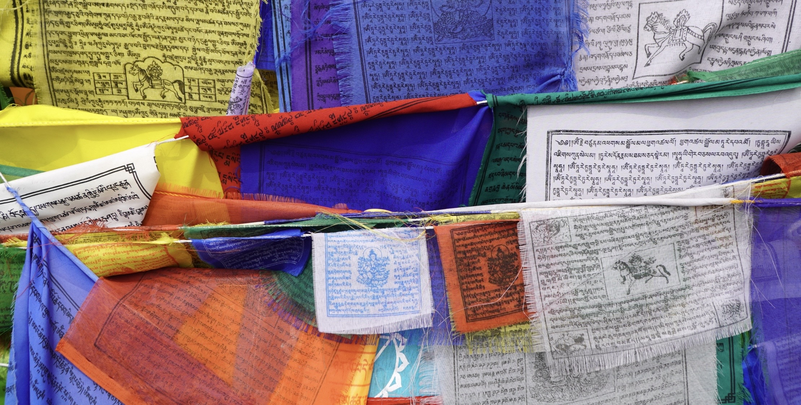
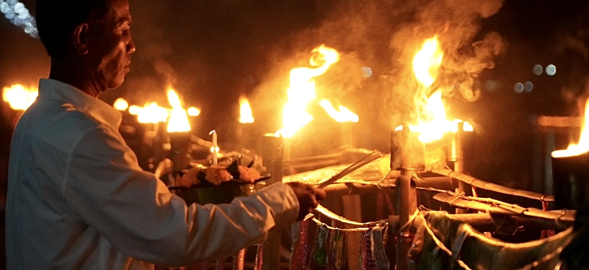
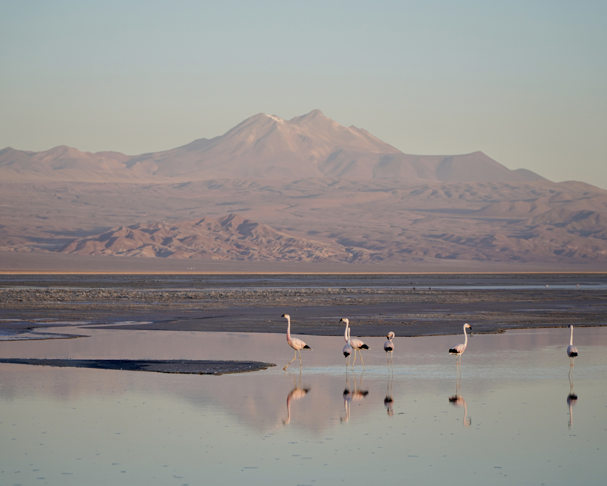
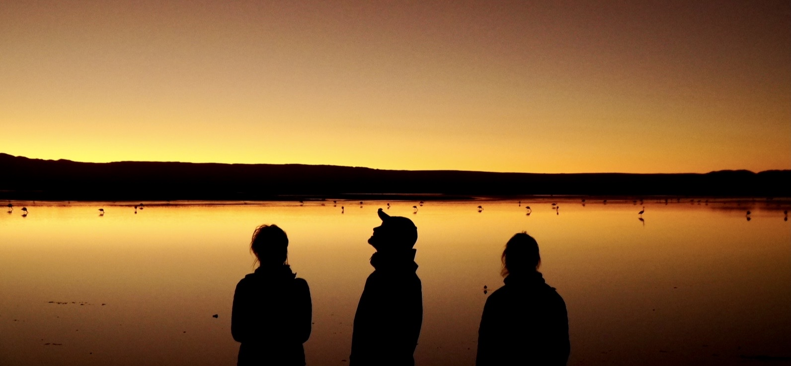
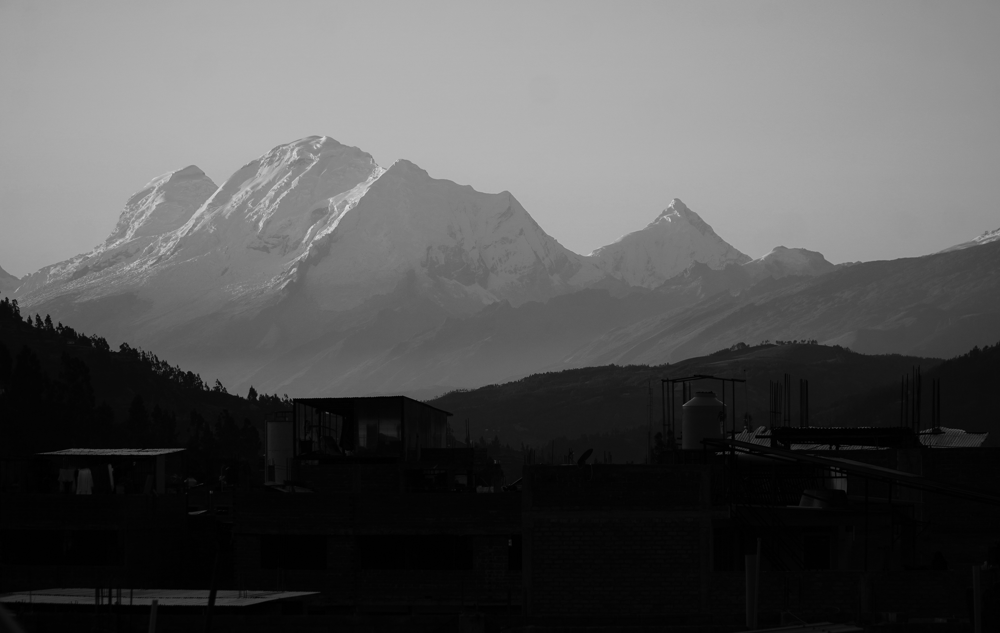
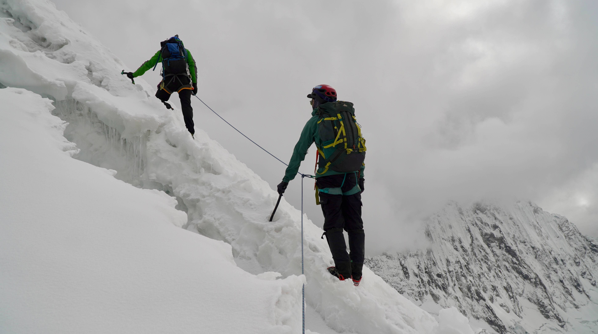

Out.Track Studio is a creative space at the intersection of art, photography, perspective and exploration. From the most natural and wild landscapes to urban environments, each project reflects a desire to step beyond limits : Physically, mentally and creatively.
Out.Track Studio est un espace créatif au croisement de l'art, la photographie, la perception et l'exploration. Des territoires reculés aux milieux urbains, chaque projet incarne une volonté de repousser les limites.
— Portfolio
Prints are available in various formats. For any inquiries or pricing requests, contact me by email.
Tirages disponibles en différents formats. Pour toute demande d'infos ou devis, contactez-moi par email.
— Projects
Aerial Perspectives
Seen from the sky, the world shifts into abstraction. Cities and landscapes become fields of lines, textures and shadows, where structure emerges beyond immediate perception. This series explores the balance between natural forms and human imprints, revealed only through distance.
Vu du ciel, le monde bascule dans l'abstraction. Villes et paysages deviennent des champs de lignes, de textures et d'ombres, où une structure se révèle au-delà de la perception immédiate. Cette série explore l'équilibre entre formes naturelles et empreintes humaines, qui ne se dévoile qu'à distance.
— Projects
Contours of Peaks
In this series, mountains are no longer anchored to the ground. The towering 8,000 meter peaks of the Himalaya along with the mountains of the Andes, are inverted. Their monumental forms are softened into abstract compositions. By flipping these iconic landscapes, the series transforms breathtaking high-altitude panoramas into a surreal realm, where horizons bend, peaks float, and perspectives dissolve. Each image invites the viewer to reconsider the mountains, not merely as geological giants, but as almost dreamlike sculptures, suspended between reality and imagination.
Dans cette série, les montagnes ne sont plus ancrées dans le sol. Les sommets himalayens de 8 000 mètres et les montagnes des Andes, sont inversés. Leurs formes monumentales sont adoucies en compositions abstraites. En renversant ces paysages emblématiques, la série transforme des panoramas d'altitude saisissants en un univers surréaliste, où l'horizon se plie, les sommets flottent et les perspectives se dissolvent. Chaque image invite le regard à reconsidérer les montagnes, non plus comme des géants géologiques, mais comme des sculptures oniriques, suspendues entre réalité et imagination.
These inverted landscapes blur familiar reference points and invite a new way of seeing. Freed from reality, the mountains become almost painterly compositions, where lines, textures and colors outweigh topography. The inversion transforms these landforms into free-floating shapes, detached from gravity, turning the landscapes into something more conceptual and mental.
Ces paysages renversés brouillent les repères et invitent à une perception nouvelle. Libérées du réel, les montagnes deviennent des compositions presque picturales, où les lignes, les textures et les couleurs, prennent le dessus sur la topographie. L'inversion transforme ces reliefs en formes libres, détachées de toute gravité, et les paysages deviennent davantage conceptuels et mentaux.
— Projects
Portraits of India
India is often described as a country that unsettles, that leaves a lasting impression on those who travel through it. One is confronted with a constant human density, an unending flow of bodies, gazes, gestures, voices, sounds and colors. This is also a country of extreme contrasts, shaped by deeply diverse social, cultural, religious and spiritual realities. Noise and silence. Dense crowds and inner solitude. Harsh living conditions and the gentleness of certain gazes. The intensity of collective rituals and the intimacy of individual moments. In an environment where everything flows and collides, portraiture becomes a pause, a suspended moment, a silent relationship between two presences : the person photographed and myself. To photograph a face within the crowd is to create a space of encounter where everything seems destined for anonymity, to reveal a singular presence within the mass.
L'Inde est souvent décrite comme un pays qui bouleverse, qui marque durablement celles et ceux qui la traversent. On y est confronté à une densité humaine permanente, à un flot continu de corps, de regards, de gestes, de voix, de sons et de couleurs. C'est également un pays de contrastes extrêmes, porteur de réalités sociales, culturelles, religieuses et spirituelles bien différentes. Bruit et silence. Foule compacte et solitude intérieure. Rudesse des conditions de vie et douceur de certains regards. Intensité des rituels collectifs et extrême intimité de certains moments individuels. Dans un environnement où tout circule, où tout se bouscule, le portrait devient un arrêt, une pause, un moment de relation silencieuse entre deux présences : celle de la personne photographiée et la mienne. Photographier un visage dans la foule, c'est tenter de créer un espace de rencontre là où tout semble voué à l'anonymat. C'est faire émerger une singularité dans une masse.
The choice of black and white was a long and almost conflicted decision. India is a country of color : omnipresent, structuring and deeply meaningful. Color runs through clothing, festivals, religious rituals, social markers, cultural and spiritual identities. Certain colors signify status, roles or life stages : marriage, mourning, religious devotion or community belonging. Color is, in many ways, a visual language, often codified. By choosing to present this work in black and white, I chose to suspend that language. This gesture doesn't aim to deny the chromatic richness of India, but to shift the viewer's gaze. Black and white partially erases visible markers of religious, social and cultural identity, removing some of the immediate references that shape interpretation. It also draws attention to the texture of the skin, the lines, the scars, the play of light across features and the depth of a gaze. Where color can sometimes seduce, distract, or exoticize, black and white introduces a form of restraint.
The portraits presented here don't claim to represent India. They are partial, subjective and situated encounters. Faces of men, women and children, from different generations, religions and social backgrounds. It's impossible to grasp the complexity of a country of over a billion people through a handful of portraits. This project embraces that limitation : it doesn't seek exhaustiveness, but rather the intensity of certain encounters.
Le choix du noir et blanc a été un geste longuement hésité, presque conflictuel en réalité. L'Inde est un pays de couleurs. La couleur y est omniprésente, structurante, signifiante. Elle traverse les vêtements, les nombreuses fêtes, les rituels religieux, les signes sociaux, les appartenances culturelles et spirituelles. Certaines couleurs indiquent des statuts, des rôles, des situations de vie : mariage, veuvage, engagement religieux, appartenance communautaire. La couleur est un langage visuel, souvent codifié finalement. En choisissant de présenter ce travail en noir et blanc, je fais le choix de suspendre ce langage. Ce geste ne vise pas à nier la richesse chromatique de l'Inde, mais à déplacer le regard. Le noir et blanc gomme partiellement les marqueurs visibles d'appartenance religieuse, sociale ou culturelle. Il retire au spectateur certains repères immédiats qui orientent l'interprétation. Il permet de recentrer l'attention sur la texture de la peau, les rides, les cicatrices, la lumière sur les traits, la profondeur d'un regard. Là où la couleur peut parfois séduire, distraire ou exotiser, le noir et blanc impose une forme de dépouillement.
Les portraits présentés ne prétendent en aucun cas bien sûr représenter l'Inde. Ils sont des rencontres partielles, subjectives et situées. Ce sont des visages d'hommes, femmes et enfants, de générations, religions et milieux sociaux variés. Il est impossible de saisir la complexité d'un pays de plus d'un milliard d'habitants en quelques portraits. Ce projet assume cette limite : il ne cherche pas l'exhaustivité, mais l'intensité de certaines rencontres.
— Projects
Echoes of Himalaya
In the immensity of the Himalayas, familiar markers gradually fade, as do the boundaries between earth and sky. Distances stretch, time slows, and the body finds a new rhythm, guided by effort, by the presence of colorful prayer flags and the turning of Buddhist prayer wheels. From Nepal to Tibet, this series emerges from long journeys through mountains that are as sacred as they are extraordinary, across the « Annapurna Circuit », the « Everest Three Passes Trek », and the Kora around Mount Kailash. Between vast horizons and more intimate moments, the images capture a world where human presence feels both fragile and deeply grounded. More than a journey through space, it becomes an exploration of perception, where each step, each breath, invites an inner dialogue. In these extreme landscapes, where altitude intensifies every sensation, the body becomes a measure of the mountain range itself a space that calls for humility and contemplation.
Dans l'immensité de l'Himalaya, les repères s'estompent peu à peu, tout comme les frontières entre terre et ciel. Les distances s'étirent, le temps ralentit, et le corps trouve un nouveau rythme, guidé par l'effort, les drapeaux colorés et les moulins de prières boudhistes. Du Népal au Tibet, cette série est issue de longues marches au milieu de montagnes aussi sacrées qu'extraordinaires, au travers du Grand tour des Annapurnas, du Trek des hauts cols de l'Everest, et de la Kora du Mont Kailash. Entre horizons infinis et instants intimes, les images captent un monde où la présence humaine paraît à la fois fragile et ancrée. Plus qu'un déplacement, c'est une exploration de la perception, où chaque pas, chaque souffle, invite au dialogue intérieur. Dans ces paysages extrêmes, où l'altitude intensifie chaque sensation, le corps devient une mesure de la chaine de montagne, appelant humilité et contemplation.
Tibet, often referred to as the « Roof of the World », is far more than a vast high-altitude plateau surrounded by the highest peaks of the Himalayan range. It is a land of spirituality, ancient traditions and breathtaking landscapes. This unique territory, deeply shaped by Buddhism as well as other spiritual influences, is defined by the strength of its people, the richness of its culture, and the depth of its religious practices.
It is here that the concept of « Shambhala » (བདེ་འབྱུང་) was born : a « source of happiness » or « place of peace ». In tradition, it exists at the intersection of myth, spirituality and cosmology. Shambhala is described as a pure realm, invisible to the ordinary eye, accessible only to those who have reached a high level of spiritual awareness. It is portrayed as a mythical and timeless kingdom, free from suffering, where its inhabitants live in peace, compassion and knowledge. For some, Shambhala is believed to be a real place, hidden in the Tibetan mountains around Mount Kailash (6 638 m). For others, it represents an inner realm, a state of consciousness and spiritual purity that anyone can reach through meditation...
Le Tibet, surnommé le « Toit du Monde », est bien plus qu'un immense plateau d'altitude entouré des plus hautes montagnes de la chaîne himalayenne. C'est une terre de spiritualité, de traditions millénaires et de paysages à couper le souffle. Ce territoire unique imprégné par le bouddhisme, mais également bien d'autres religions, se distingue par la force de son peuple, la richesse de sa culture et la profondeur de ses pratiques religieuses.
Là-bas est né le concept de « Shambhala » (བདེ་འབྱུང་) : « source de bonheur » ou « lieu de paix ». Dans la tradition, ce dernier est à la frontière entre mythe, spiritualité et cosmologie. Le Shambhala est un lieu pur, invisible aux yeux ordinaires, accessible seulement à ceux qui ont atteint un haut degré de conscience spirituelle. Il est décrit comme un royaume mythique et intemporel, où la souffrance n'existe pas, où les habitants vivent dans la paix, la compassion et la connaissance. Pour certains, le Shambhala est un lieu réel, caché dans les montagnes tibétaines autour du Mont Kailash (6 638 m). Pour d'autres, c'est un lieu intérieur, un état de conscience et de pureté spirituelle, que chacun peut atteindre par la méditation...

— Projects
Roads across Asia
This work traces a journey of several months across Southeast Asia : Myanmar, Thailand, Vietnam, Laos, Cambodia and China ; a trip shaped by the diversity of landscapes and cultures. Between movement and contemplation, this territory reveals itself as deeply contrasted, both fascinating and disorienting. Places of worship and ancestral temples, rice fields evolving with the seasons, sunsets over rivers, encounters with wildlife in both natural and urban environments, and scenes of daily life shaped by religious rituals… These images capture fleeting moments and suspended instances of a world in constant motion, offering glimpses into a different way of seeing reality.
Ce travail retrace un itinéraire de plusieurs mois au travers l'Asie du Sud-Est : Birmanie, Thaïlande, Vietnam, Laos, Cambodge et Chine ; un voyage marqué par la diversité des paysages et des cultures. Entre agitation et contemplation, ce territoire s'est avéré profondément contrasté, aussi fascinant que dépaysant. Lieux de culte et temples ancestraux, rizières se transformant au fil des saisons, couchers de soleil sur les fleuves, rencontres animales dans des espaces naturels comme en milieux urbains, ou encore scènes de vie ancrées dans un quotidien rythmé par les rites religieux… Ces images captent des instants fugaces et moments suspendus d'un monde en perpétuel mouvement, autant d'immersions dans une autre façon de voir et d'habiter le réel.
In the continuation of the travel, India and Nepal reveal a different intensity : more raw, and even more contrasted. From high-altitude trails where rhododendrons bloom to the calm and tropical south, and through the lively streets of Pokhara and Kathmandu, Nepal's landscapes oscillate between softness and verticality… In India, from cities like Delhi or Mumbai to the beaches of Goa, from Rajasthan to Punjab, Uttar Pradesh and Himachal Pradesh, each region unfolds with its own distinct character. Reality becomes denser, more vivid and more intense. Crowds, festivals, rituals, silences, etc. The images emerge from this fragile balance between turmoil and contemplation, between saturation and emptiness, between collective effervescence and moments of withdrawal. There, everything feels more immediate, more intense. It's like a world where atmospheres overlap, and where each scene becomes another reality both striking and deeply human.
Dans le prolongement du voyage, l'Inde et le Népal dévoilent une autre intensité : plus brute, et encore plus contrastée. Des sentiers d'altitude où fleurissent les rhododendrons au sud calme et tropical, jusqu'aux ruelles animées des villes de Pokhara et Katmandou, les paysages népalais oscillent entre douceur et verticalité… En Inde, de villes comme Delhi ou Mumbai aux plages de Goa, de la région du Rajasthan à celles du Punjab, de l'Uttar Pradesh et de l'Himachal Pradesh, les territoires se succèdent sans jamais se ressembler. Le réel se densifie, se colore et s'intensifie. Foules, festivals, rituels, silences, etc. Les images naissent de cet équilibre fragile entre tumulte et recueillement, entre saturation et vide, entre effervescence collective et moments de retrait. Là-bas, tout semble plus dense, plus immédiat. C'est comme un monde où les atmosphères se superposent, et où chaque scène devient une autre réalité à la fois saisissante et profondément humaine.
Asia is a continent of remarkable spiritual richness, where a multitude of religions and philosophies have coexisted for thousands of years. Indeed, Buddhism, Hinduism, Sikhism, Jainism, Shintoism, Taoism, Confucianism, Islam, as well as Christianity, Judaism, and various local religions in certain regions, intertwine and profoundly shape cultures, landscapes, and ways of life. This religious diversity reflects a shared universal quest : to understand humanity's place in the world and to establish a connection with the sacred.
L'Asie est un continent d'une grande richesse spirituelle, où coexistent depuis des millénaires une multitude de religions et de philosophies. En effet, le bouddhisme, l'hindouisme, le sikhisme, le jaïnisme, le shintoïsme, le taoïsme, le confucianisme, l'islam, mais aussi le christianisme, le judaïsme et diverses religions locales dans certaines régions, s'y entremêlent et façonnent profondément les cultures, les paysages et les modes de vie. Cette diversité religieuse témoigne d'une même quête universelle : comprendre la place de l'homme dans le monde et établir un lien avec le sacré.

— Projects
Nomad in LatinAmerica
This photographic project documents a 500 days backpacking journey across Latin America. Over the course of the trip, it also evolved into an inner journey. Between high-altitude ascents, demanding treks, kite surfing, surfing, yoga, scuba diving, immersion in wild environments, and countless « first times », both body and mind were constantly pushed beyond what they believed to be their limits. This journey became a school of adaptation, humility, and surrender, lived in contact with deeply rooted cultures, sometimes harsh territories, and a radically different relationship to time and to life itself. Latin America reveals itself here in all its richness and contrasts : a land of intensity and human warmth, with extraordinary landscapes and still relatively untouched places. Through the many experiences lived along the way, these images tell as much a story of exploration of the world as they do of personal transformation and growth.
Ce projet photographique retrace une traversée en backpacking de l'Amérique Latine en 500 jours. Au fil du voyage, ce projet s'est aussi transformé en une aventure intérieure. Entre ascensions en haute altitude, treks engagés, kite-surf, surf, yoga, plongée sous-marine, immersion dans des environnements sauvages et un grand nombre de « 1eres fois », le corps et l'esprit ont constamment été confrontés à ce qu'ils pensaient être leurs limites. Ce voyage a été une école de l'adaptation, de l'humilité et du lâcher-prise, au contact de cultures profondément ancrées, de territoires parfois rudes, et d'un rapport au temps et au vivant radicalement différent. L'Amérique Latine s'y révèle dans toute sa richesse et ses contrastes : une terre d'intensité et de chaleur humaine aux paysages extraordinaires et encore relativement peu touristiques. Au travers des nombreuses expériences vécues lors de ce voyage, ces images racontent autant une exploration du monde qu'un cheminement et une évolution personnelle.
From the Carnival of Rio de Janeiro, the beaches of Brazil, the Iguazu Falls, tango nights and evenings in Buenos Aires, the feeling of being at the end of the world in Ushuaia, the Perito Moreno Glacier, the iconic Fitz Roy, Cerro Torre and the Torres del Paine of Patagonia, the journey along the Andes following Ruta 40 and the Carretera Austral, Santiago, Valparaíso, Argentine and Chilean wines, Salta and the deserts around Tolar Grande, the Salar de Uyuni, Sajama National Park, the vibrancy of La Paz, ascents of 6000-meter peaks in Bolivia, Lake Titicaca, Cusco, Machu Picchu and the Sacred Valley of the Incas, Huaraz and numerous climbs in the Cordillera Blanca, the Huayhuash trek with its vast condors, the many herds of llamas and alpacas in Peru, volunteering in a sanctuary for animals rescued from poaching in Ecuador, immersion in the Amazon rainforest, the volcanoes of Cotopaxi and Chimborazo, hammerhead sharks and manta rays in the Galápagos Islands, the colonial villages and paradisiacal beaches of Colombia, a cargo boat journey to reach the remote Chocó region, a sailboat crossing to Central America, the San Blas Islands and the Panama Canal, the wildlife and flora of Costa Rica, learning to surf in Nicaragua, hitchhiking across Honduras and El Salvador, a New Year's Eve in the beautiful city of Antigua with views of the Fuego volcano erupting, the Mayan and Aztec archaeological sites of Mexico, baby turtles in the Oaxaca region, festivities in Chiapas, and a total solar eclipse in Baja California, among many other moments. This chapter of my life has been shaped by a lot of memories and lessons.
Le Carnaval de Rio de Janeiro, les Plages Brésiliennes, les Chutes d'Iguazu, le Tango et les soirées de Buenos Aires, le sentiment de bout du monde d'Ushuaïa, le Glacier du Perito Moreno, le fameux Fitz Roy, le Cerro Torre et les Torres del Paine de Patagonie, la remontée des Andes en longeant la Ruta 40 et la Carretera Australe, Santiago, Valparaiso, les Vins Argentins & Chiliens, Salta et les déserts aux alentours de Tolar Grande, le Salar d'Uyuni, le Parc Sajama, l'effervescence de La Paz, l'ascension de sommets de 6000 m en Bolivie, le Lac Titicaca, Cusco, le Machu Picchu et la vallée sacrée des Incas, Huaraz et un grand nombre d'ascensions dans les montagnes de la Cordillera Blanca, le Trek Huayhuash avec ses immenses Condors, les nombreux troupeaux de lamas et d'alpagas du Pérou, un volontariat dans un refuge d'animaux rescapés du braconnage en Équateur, une immersion dans la forêt amazonienne, les volcans du Cotopaxi et du Chimborazo, les Requins Marteaux et les Raies Mantas des îles des Galápagos, les villages coloniaux et les plages paradisiaques de Colombie, une traversée sur un bateau cargo pour atteindre la région isolée du Chocó, une traversée sur un voilier pour rejoindre l'Amérique Centrale, les îles San Blas et le Canal de Panama, la faune et la flore du Costa Rica, l'apprentissage du surf au Nicaragua, la traversée en autostop de l'Honduras et du Salvador, un Nouvel An dans la belle ville d'Antigua avec la vue sur une éruption du Volcan Fuego au Guatemala, les sites Mayas et Aztèques du Mexique, des Bébés Tortues dans la région de Oaxaca, les festivités dans la région du Chiapas, une Éclipse Totale en Baja California, etc. Beaucoup de souvenirs et d'apprentissages qui continueront de m'accompagner bien au-delà de ce voyage.


— Projects
Light of the Orient
This work was born from several trips across Jordan, Morocco, Egypt and Turkey. From the ancient city of Petra and the vast desert of Wadi Rum to the Sahara, from the vibrant moroccan medinas to the streets of Cairo, the Pyramids of Giza, the rock formations of Cappadocia and the markets of Istanbul... Light sets the rhythm, shaping forms and transforming colors at every moment of the day and through the changing seasons. Ever-shifting, sometimes soft, sometimes harsh, it accompanies every scene of life, across the cities, villages and deserts of the Orient.
Ce travail est né de plusieurs voyages au travers de la Jordanie, du Maroc, l'Egypte et la Turquie. De la Cité de Petra et du Désert du Wadi Rum au Sahara, des diverses médinas marocaines aux rues du Caire, aux Pyramides de Gizeh, aux formations rocheuses de la Cappadoce et aux marchés d'Istanbul... La lumière y impose son rythme, sculptant les formes et métamorphosant les couleurs à chacun des instants de la journée et au fil des saisons. Changeante, parfois douce, parfois brûlante, elle accompagne toutes les scènes de vie des villes, villages et déserts d'Orient.
— Projects
Arctic Horizons
This work was created in arctic territories, in Iceland and near the remote city of Tromsø in northern Norway. These images explore vast landscapes of contrasts, where nature and cold collide. Between ice, water, and sky, the horizons stretch endlessly, sculpted by the elements and shaped by a constantly changing climate. Frozen expanses, shifting terrains, and ever-evolving landscapes form a silent world, almost motionless. A raw beauty emerges, simple and powerful, within an environment that is : both harsh and deeply captivating.
Réalisées dans les territoires arctiques, en Islande et vers la ville reculée de Tromsø au nord de la Norvège, ces images explorent de grands espaces de contrastes, où la nature et le froid se confrontent. Entre glace, eau et ciel, les horizons s'étirent à perte de vue, sculptés par les différents éléments et façonnés par un climat en constante mutation. Les étendues gelées, les reliefs mouvants et les paysages en transformation permanente composent un monde silencieux, presque immobile. Une beauté brute s'y révèle, simple et puissante, dans un univers à la fois : rude et profondément fascinant.
— Projects
Mountains & Summits

In the mountains, the body is constantly engaged, and conditions change rapidly, requiring constant vigilance. This work does not seek performance, but rather captures a state, a fragile balance at the heart of altitude. Mountaineering and the ascent of snow-covered summits are part of this pursuit, shaped by commitment, precision, and exposure. What remains is breath, movement, and vast natural spaces. The mountain acts as a filter, reducing reality to its essential form. These images reflect this state, between solitude, intensity, and altered perception.
En montagne, le corps est constamment engagé, et les conditions changent rapidement, imposant ainsi une vigilance permanente. Ce travail ne cherche pas la performance, mais capture un état, un équilibre fragile au cœur de l'altitude. L'alpinisme et l'ascension de sommets enneigés s'inscrivent dans cette recherche, entre engagement, précision et exposition. Ne restent que le souffle, le mouvement et de grands espaces naturels. La montagne agit comme un filtre, réduisant le réel à l'essentiel. Ces images traduisent cet état, entre solitude, intensité et perception transformée.
These images come from ascents carried out in different mountain ranges, between the French Alps and the Andes across Bolivia and Peru. From Mont Blanc (4,809 m) to Mont Pelvoux (3,946 m), and up to the high-altitude peaks of South America : Huayna Potosí (6,088 m), Volcán Acotango (6,052 m), Volcán Uturuncu (6,020 m), Volcán Misti (5,822 m), Nevado Pisco (5,752 m), Nevado Vallunaraju (5,686 m), Nevado Ishinca (5,530 m), Nevado Yanapaccha (5,460 m), among others. Each ascent is part of a progression through varied and demanding environments. These landscapes, shaped by ice, snow, rock, and altitude, define both the physical experience and the way the landscape is perceived.
Ces images sont issues d'ascensions réalisées dans différents massifs, entre les Alpes Françaises et les Andes de la Bolivie au Pérou. Du Mont-Blanc (4 809 m) au Mont Pelvoux (3 946 m), jusqu'aux sommets d'altitude sud-américains : Huayna Potosí (6 088 m), Volcán Acotango (6 052 m), Volcán Uturuncu (6 020 m), Volcán Misti (5 822 m), Nevado Pisco (5 752 m), Nevado Vallunaraju (5 686 m), Nevado Ishinca (5 530 m), Nevado Yanapaccha (5 460 m), etc. Chacune de ces ascensions s'inscrit dans une progression à travers des environnements variés et exigeants. Ces territoires, entre glace, neige, roche et altitude, façonnent autant l'expérience physique que le regard porté sur le paysage.

— Projects
Urban & Cities Shadows
In black and white, the city reveals a different language. Stripped of color, it becomes a composition of light, contrast, and geometry. From NYC, Paris to Berlin to Moscow, this series captures fragments of urban spaces : between movement and stillness, presence and absence. Through acts of exploration, sometimes through urbex, it ventures into the interstices of the city, revealing places suspended between oblivion and transformation.
En noir et blanc, la ville révèle un autre langage. Dépouillée de ses couleurs, elle devient un jeu de lumières, de contrastes et de géométries. De New-York, Paris à Berlin, jusqu'à Moscou, cette série capte des fragments d'espaces urbains : entre mouvement et immobilité, présence et absence. À travers des explorations, parfois en urbex, elle s'aventure dans les interstices de la ville, révélant des lieux laissés en suspens entre oubli et transformation.